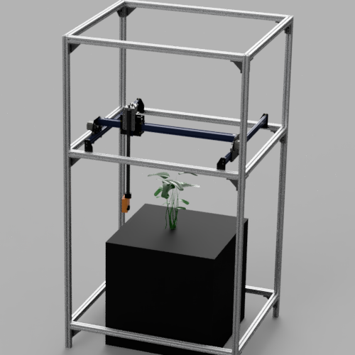
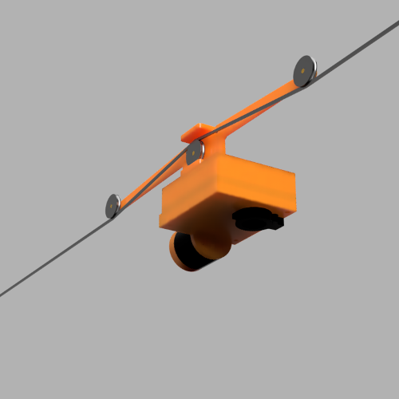

Robotics for micro-farmsLink
ROMI is a four-year Europe-funded research project committed to promote a sustainable, local, and human-scale agriculture. The goal is to develop an open-source, affordable, multipurpose platform adapted to support organic and poly-culture market-garden farms.
| Plant Phenotyping | Crop Monitoring | Rover |
|---|---|---|
|  |  |  |
Complete module listLink
| Type | Source code link |
|---|---|
| Hardware | Plant Imager Cable Bot Rover |
| Storage | PlantDB |
| Viewers | Plant 3D Explorer Farmers Dashboard |
| Algorithms | Virtual Plant Imager Plant 3D Vision romiseg DTW |
| Third-party & wrapping | romicgal |